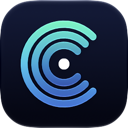

Privacy Policy
Effective October 12, 2026
Data we collect
None. The developer does not receive any information about you or your devices.
Data stored on your device
To show history and remember your settings, Custosys stores the following only on your device: settings, speed test results, performance test scores, charging sessions, battery health history, heat history, alerts you received and device test results. Pairing keys for Mac monitoring are kept in your device's Keychain. Deleting the app deletes this data.
Network connections
| Feature | Connects to | What is sent |
|---|---|---|
| Speed test (default) | Cloudflare (speed.cloudflare.com) | Test traffic only. Like any internet connection, the server can see your IP address. |
| Speed test (Apple option) | Apple (mensura.cdn-apple.com) | Test traffic only, same as above. |
| Internet info on the Network page | Cloudflare (1.1.1.1) | A single request that returns your public IP address and nearest data center. The result is shown to you and not stored or sent anywhere else. |
| Monitor your Mac from iPhone | Your own Mac on your local network | System statistics, encrypted with a key unique to each paired device. This never leaves your local network. |
See Cloudflare's privacy policy and Apple's privacy policy for how those services handle connections.
Permissions
- Local Network: to find and connect to your Mac for monitoring.
- Location (Mac): macOS only shows nearby Wi‑Fi network names to apps with location access. Your location is not used or stored.
- Camera, Microphone, Motion and Face ID (iPhone): only during the device test, to check that the hardware works. Nothing is recorded or saved.
- Notifications: to deliver the alerts you turn on.
Purchases
Custosys Pro is sold through the App Store. Apple processes the payment; the developer does not receive your payment details.
Children
Custosys does not collect data from anyone, including children.
Changes
If this policy changes, the new version will be posted on this page with a new effective date.
Contact
Questions? Open an issue at github.com/caganerdal/custosys/issues.